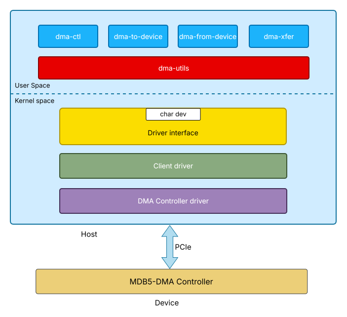

Introduction
MDB5-DMA (Multimedia DMA Bridge) enables configuration and data transfer capabilities to a DMA controller through a Linux driver and user-space application. This documentation outlines the design and components involved in enabling DMA operations, including kernel-level drivers, supporting utilities, and user-space applications.
For hardware specifications and detailed register information, refer to the MDB5-DMA Hardware Documentation.
MDB5-DMA Hardware Features
Memory-to-Memory Transfers
Maximum DMA transfer size: 4GB; minimum transfer size: 1 byte
Support for 8 Read and 8 Write Channels
Doorbell register access support
Linked-list and Non Linked-list Mode
Full Duplex Operation
Separate Tags for DMA Transfers
MSI Interrupt Generation
Reordering of DMA Transfer completions
MDB5-DMA Software Features
Simple DMA transfers
Scatter-Gather DMA transfers
MSI Interrupt support
Important
MDB5-DMA Limitations:
Does not have streaming transfer support (only memory-to-memory transfer supported)
Does not have virtualization support.
MDB5-DMA Software Components
Controller Driver
The Controller Driver is an open-source component integrated into the Linux kernel. It directly manages the MDB5-DMA Controller through the DMAEngine framework. The driver exposes standard DMA APIs while handling the hardware-specific details of the controller. It manages 16 channels: 8 read and 8 write channels.
The Controller Driver source code is available at: dw-edma Linux kernel driver.
Client Driver
The Client Driver is a custom character driver developed to interface with the Controller Driver, enabling user-space configuration and control of MDB5-DMA channels. It provides character device nodes that allow user-space applications to configure the MDB5-DMA controller and control data transfer on a per-channel basis.
User Applications
The user-space applications provide a set of command-line applications to configure, manage, test, and monitor the various functionalities and features of the MDB5-DMA controller. These user-space applications communicate with the Client Driver through the character driver interface to perform the functionalities. dma-utils provides common functions for all the applications to use. See the API Reference section for detailed documentation of the dma-utils library.
The command-line applications include:
dma-ctl: to configure and control MDB5-DMA devicesdma-to-device: to perform H2C data transferdma-from-device: to perform C2H data transferdma-xfer: to demonstrate data transfer using configuration file
MDB5-DMA Architecture
To begin with, it could be mentioned that the diagram serves as an illustration of the MDB5-DMA software stack, demonstrating how a user application leverages the driver interface to interact with the client driver. This client driver, in turn, communicates with the DMA controller driver, and the process continues in a similar manner
